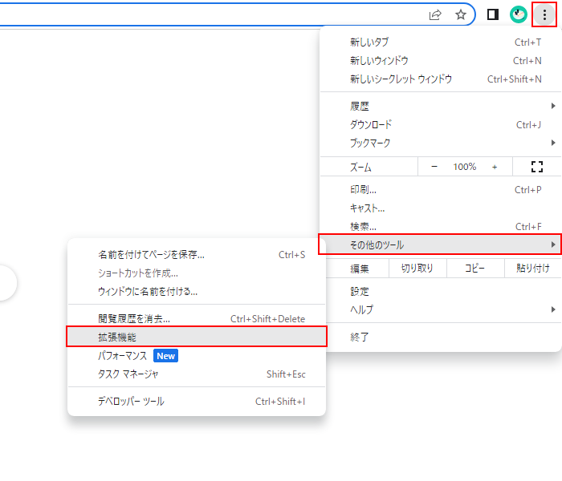
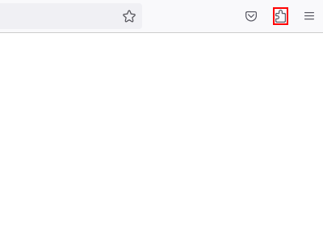
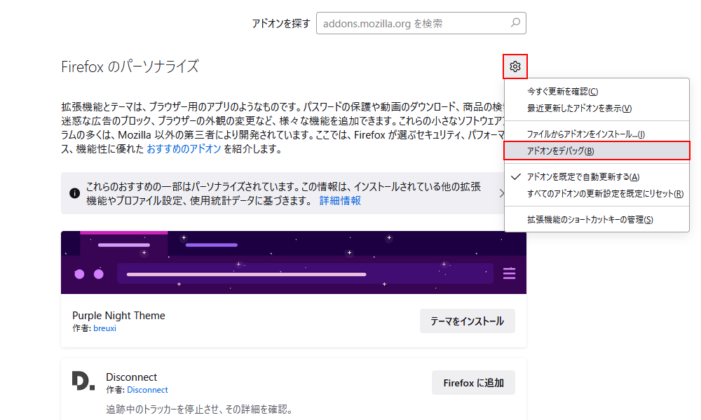
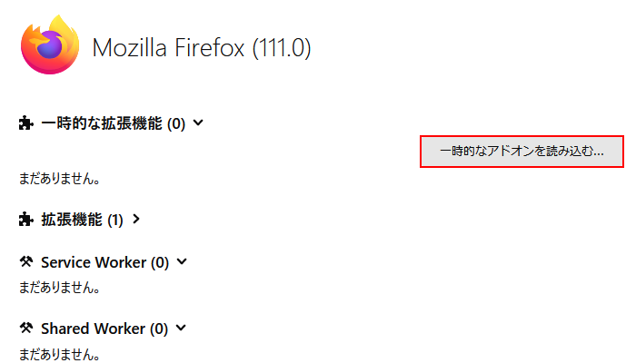

ストアで公開されていない拡張機能を読み込む方法
あらかじめダウンロードした拡張機能のファイルを展開しておきます。
Chromeの場合
chrome://extensions/にアクセスする

manifest.jsonが含まれるディレクトリを指定して読み込む
Edgeの場合
edge://extensions/にアクセスする
manifest.jsonが含まれるディレクトリを指定して読み込む
Firefoxの場合
about:addonsにアクセスする

about:debugging#/runtime/this-firefoxにアクセスする

manifest.jsonを指定して読み込む
